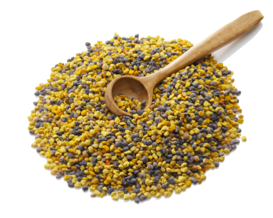

Якщо підійти навесні до вулика, то, спостерігаючи за бджолами, неважко помітити як вони на задніх лапках
діловито несуть у вулик якісь маленькі різноколірні грудочки. Грудочки ці не що інше, як квітковий пилок,
який бджоли попутно з нектаром збирають з квітів.
Корисні мікроелементи, що містяться в пилку, а їх близько
п'ятисот, ставлять лікування пилком в особливий ряд методів, здатних зцілити найскладніші хвороби, уповільнити
старіння і продовжити молодість.
У квітковому пилку міститься настільки багато вітамінів, що навіть найдорожчі штучні вітамінні комплекси і
біодобавки просто не потрібні.
Статті цього розділу будуть розповідати вам, дорогі читачі, про народні методи
лікування пилком. Ось далеко неповний список недуг, при яких допоможе квітковий пилок.
- Квітковий пилок підвищує тонус і омолоджує організм;
- Дуже корисний пилок для чоловіків, особливо для тих, хто переступив сорокарічний рубіж : лікує хвороби передміхурової залози, сечостатевої системи і зміцнює потенцію;
- Обніжжя покращує травлення і очищає шлунково-кишковий тракт від шлаків і токсинів;
- Нормалізує квітковий пилок і роботу печінки, жовчного міхура;
- Зміцнює сердечний м'яз, нормалізує тиск і чистить посудини;
- Пилок незамінний при ендокринних порушеннях;
- Бджолине обніжжя добре виводить радіацію і шкідливі хімічні речовини з організму;
Приймають квітковий пилок курсами тривалістю не більше двох тижнів. Щоденна норма прийому обніжжя складає 30гр.
Незважаючи на вищеописані переваги лікування квітковим пилком існують і деякі протипоказання до її застосування.
З обережністю вживати пилок рекомендується людям, що страждають різного роду алергіями. Виникнення висипань і свербежу,
почервоніння очей і поява нежиті говорять про те що вам слід відмовитися від використання пилку.